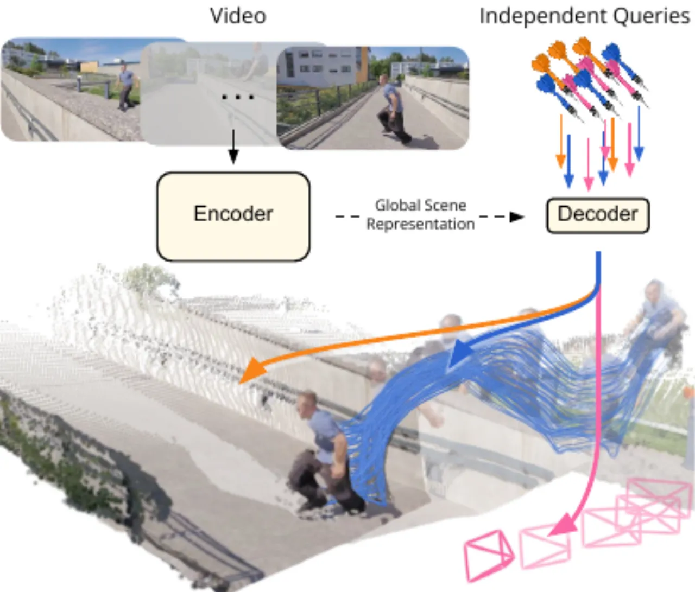
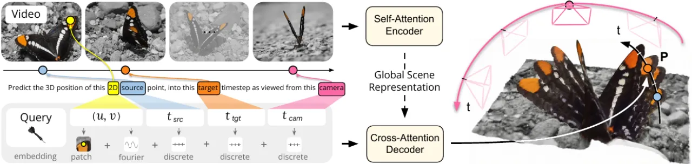
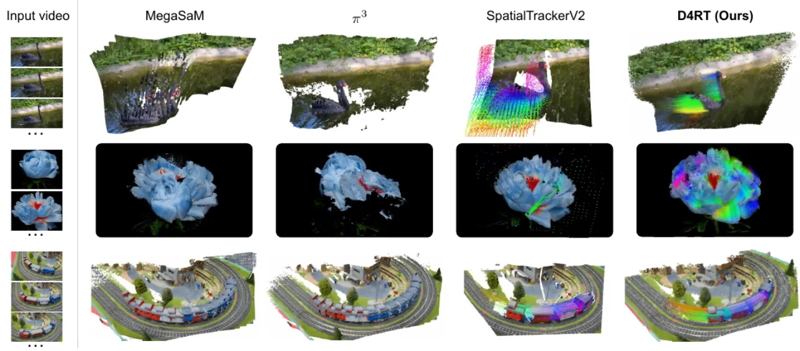
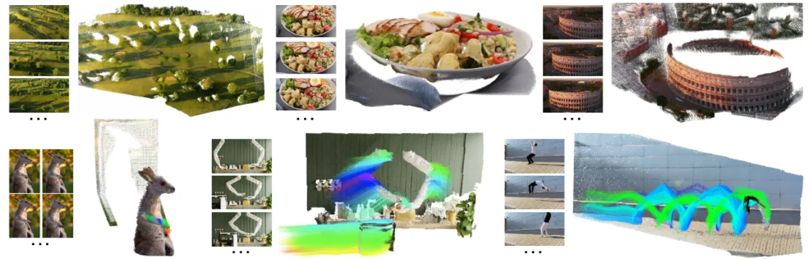
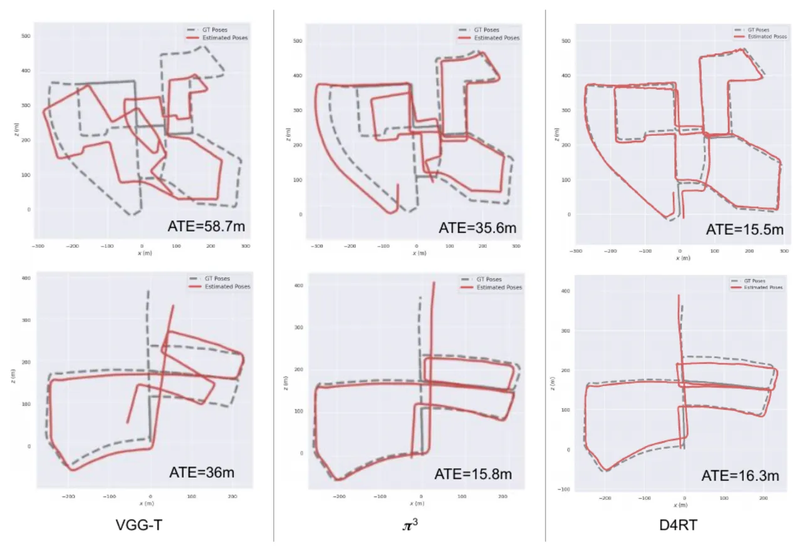

一个简洁而强大的前馈模型，「用统一的 Transformer 架构，从单段视频联合推断深度、时空对应与完整的相机参数」。其核心创新是「一个新颖的查询机制，绕开了稠密逐帧解码的繁重计算，以及管理多个任务专用解码器的复杂性」。
「从视频中理解和重建动态场景复杂的几何与运动，依然是计算机视觉的一个巨大挑战。」尽管大家都需要统一的 4D 理解，「主流方法往往把问题拆成一个个离散、任务专用的组件」。
「依赖一堆现成模型，分别估计单目深度、度量深度和运动分割。」融合这些信号「需要计算上昂贵的测试时优化来强制几何一致」。
前馈方法，但「为不同模态使用各自专用的解码器」。关键是，它「无法为场景的动态部分建立对应」。
「引入了动态」，但「仍缺乏统一的单阶段表述，反而依赖昂贵的迭代细化」。
许多方法不支持视频内变化的内参、只能用第一帧作参考、或为稀疏/稠密输出准备不同的头——管线臃肿。
「我们提出范式转变：从碎片化的、帧级解码，转向高效的、按需查询（on-demand querying）。」

D4RT 是「一个受 Scene Representation Transformer 启发的简洁编码器-解码器架构」。编码器产出全局场景表征 F；一个轻量解码器随后「通过一个简单的低层接口查询 F」。

一个查询定义为 q = (u, v, t_src, t_tgt, t_cam)：
每个查询「被完全独立地处理」，输出其 3D 点位置 P = Dec(q, F) ∈ ℝ³。本文强调三个优良性质：
一个「带交替的局部逐帧与全局自注意力层」的 ViT。视频「在 tokenize 前 resize 到固定的正方形分辨率」；原始长宽比被嵌入「单独的一个 token」。默认：ViT-g、40 层、时空 patch 2×16×16，约 1B 参数。
「一个小型 cross-attention Transformer」（8 层、144M）。查询 token = (u,v) 的 Fourier 嵌入 + 可学习时间步嵌入。关键技巧：「用一个以 (u,v) 为中心的 9×9 局部 RGB patch 嵌入来增强查询，能极大地提升性能」。
端到端训练。主监督是「对归一化 3D 点位置 P 的 L1 损失」（按均值深度归一化，再经 sign(x)·log(1+|x|)「抑制远点的影响」）。辅助损失：2D 坐标 L1、3D 表面法向余弦相似度、目标点可见性 BCE、点运动 L1，以及置信度惩罚。
配置：ViT-g 编码器 + 8 层解码器；48 帧片段、256×256；每步 2048 个随机查询；500K 步、64 块 TPU，「刚过 2 天」。
朴素地跟踪所有像素「需要 O(T²HW) 次查询，其中大多数并不需要」。本文引入一个用占据栅格的算法，它「只从未访问的像素发起新轨迹」，每条全视频轨迹会把它「可见经过」的所有时空像素标记为已访问。「经验上，根据视频运动复杂度，这带来 5–15× 的自适应加速。」之所以可行，「正是因为我们的解码器既稀疏又轻量」。
「通过简单地改变查询的取法，我们的框架就能处理一大类 4D 任务」——无需任务专用的头。
| 任务 | 查询取法 |
|---|---|
| 点轨迹（3D） | 固定 (u,v,t_src)，让 t_tgt = t_cam = {1…T} 遍历 →「它的点轨迹，即对应点在整段视频中的 3D 轨迹」。 |
| 点云 | 「视频中所有像素的 3D 位置都能在一个共享参考帧 t_cam 下直接预测」，无需用噪声相机做坐标变换。 |
| 深度图 | 「令 t_src = t_tgt = t_cam 查询任意像素，只取输出 P 的 Z 分量」。 |
| 相机外参 | 在两帧网格采样源点 → 同一批 3D 点在不同参考系下的表达 → 用「Umeyama 算法（求解 3×3 SVD 分解）」求刚性变换。 |
| 相机内参 | 解码网格点，假设主点 (0.5, 0.5) 的针孔模型，按 f = p_z·(u−0.5)/p_x 求焦距，「对 k 个估计取中位数以稳健化」。 |

D4RT「刷新了 SOTA，在广泛的 4D 重建任务上超越了既有方法」——速度与精度兼得。
在 TAPVid-3D（「三个真实世界、富有挑战的子集」）上评测。对局部坐标系 3D 跟踪，报告 APD₃D、遮挡精度 OA 与 3D Average Jaccard（AJ），「D4RT 达到 SOTA……无论是否给定真值内参」。对世界坐标系 3D 跟踪——它「也衡量模型隐式切换参考系的能力」——「我们的模型在这项任务上同样出色，各项指标都有强力提升」。在效率上，「我们的模型比前作快 18–300×」。

| 消融项 | 发现 |
|---|---|
| 局部 RGB patch | 「带来巨大的性能提升。」它帮助查询「建立更可靠的对应」，并提供「帮助从背景中分割物体、产生细粒度预测的低层线索」——比 DPT 的 skip 连接「简单得多」。 |
| 编码器规模 | 从 ViT-B(90M) 到 ViT-g(1B)：「显著的性能提升，深度估计与相机位姿的 RPE-R 尤其明显」。 |
| 辅助损失 | 「有些显著提升深度（如 2D 位置、法向），有些对更好的相机位姿至关重要（如置信度）。」 |
| 连续查询 → 子像素 | 由于 (u,v) 在连续 [0,1]²，「我们的解码器能在任意分辨率探测场景」。配合原分辨率 RGB patch，可恢复发丝、物体边界等精细细节。 |

子像素解码消融指出：朴素的稠密查询「恢复了更平滑的边缘，但仍然无法恢复高频细节」。要恢复精细细节（发丝、物体边界），需要额外机制——「在原始分辨率下从源帧提取局部 RGB patch 进行解码」。换言之，编码器原生分辨率的输出「本质上是粗糙的」，锐度高度依赖 RGB patch 技巧。
模型「在 256×256 分辨率的 48 帧片段上训练」，编码器把输入「resize 到固定的正方形分辨率再 tokenize」（长宽比只能通过一个单独 token 间接编码）。这对高分辨率或极端长宽比场景是结构性约束；精细几何主要靠解码端的连续查询 + 原分辨率 patch 来补偿。
处理长序列时并非一次前馈：视频被切成「重叠片段」，再用 Umeyama Sim(3) 估计对齐（类似 VGGT-Long 的第一阶段，但省略回环检测与全局优化）。超长视频的全局一致性因此依赖后处理拼接，而非模型内生的全局推理。
独立解码是效率的关键，但也是一种约束：作者「经验性地观察到，启用查询间 self-attention 会带来大幅性能下降」。每个查询孤立解码，无法显式利用与邻近查询的关系——所有跨点一致性都必须由共享的场景表征 F 隐式承载。
训练混合偏重合成/半合成数据集（Kubric、PointOdyssey、Dynamic Replica、VirtualKITTI、TartanAir……），因为动态对应的真值在真实世界极难获取。这带来对合成分布的潜在依赖与 sim-to-real 泛化压力——是这类动态对应方法共同的约束。
内参恢复「假设主点在 (0.5, 0.5) 的针孔相机模型」。带畸变的相机（如鱼眼）需要「在初始估计之上加一个非线性细化步骤」，并非由主模型直接产出。
总体而言，D4RT 的设计哲学是「用一个统一、轻量、可自由查询的接口换取强大的效率与灵活性」，其代价主要落在分辨率/高频细节、长视频拼接，以及对合成数据的依赖上。